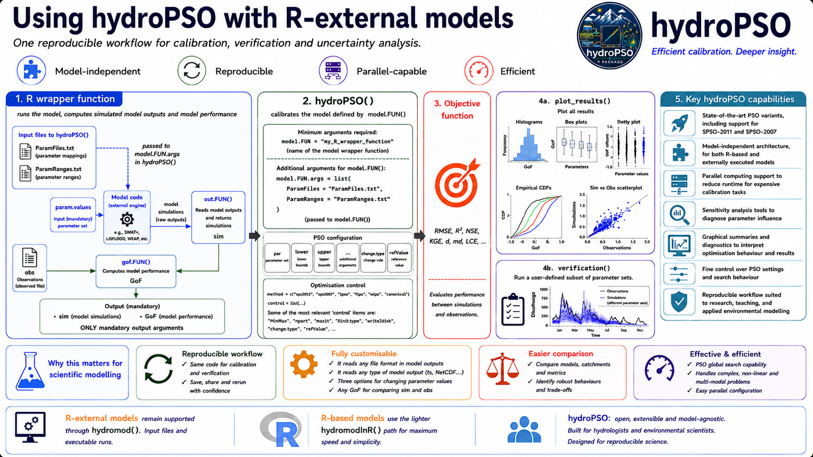

Why R-external models matter
Many environmental models used in science and decision support are
not R functions. They are compiled executables, command-line programs,
GUI-derived projects, or legacy model codes that exchange information
through input and output files. hydroPSO was designed to
calibrate that kind of model without requiring the modeller to rewrite
the scientific code.
This is the role of fn = "hydromod": it connects the PSO
engine with an external model run. hydroPSO proposes
parameter values, writes those values into the model input files, runs
the external model, reads the simulated outputs, computes the
goodness-of-fit value, and sends that value back to the swarm.
The basic workflow
The calibration of an R-external model with
hydroPSO has a file-based workflow, which is illustrated by
the figure shown below:

ParamRanges.txt: defines the parameters to be optimised, their search ranges and the type of modification (TypeChange) made for each parameter (replacement, additive or multiplicative). Its path is passed tohydroPSOthrough themodel.FUN.argsargument.ParamFiles.txttellshydroPSOwhere and how each parameter is written in the external model input files, as well as the reference value (RefValue) to be used when the type of change is additive or multiplicative. Its path is passed tohydroPSOthrough themodel.FUN.argsargument .R wrapper function: this is a user-defined function that:
- takes a parameter set (
param.values) as first mandatory parameter - runs the R-external model using the
hydromodfunction,ParamRanges.txtandParamRanges.txtfiles, and the parameter set provided by the PSO engine, and deliver model outputs - uses
out.FUN()argument, within thehydromodfunction, to read the model output files and returns the simulated values. - reads observations (
obs) - uses
gof.FUN()argument, within thehydromodfunction, to compare simulations with observations and returns the objective-function value (i.e., the model’s performance).
-
hydroPSO engine: this is the main function of the
hydroPSOpackage, which updates the parameter sets throughout the iterations. This function:
- takes as first argument
fn="hydromod", which tellshydroPSOthat we are going to optimise an R-external model (and not an external model), - takes the R wrapper function defined in the previous step
(
model.FUNandmodel.FUN.args), - takes a parameter set (
par), coming either from the initialisation method defined by theXini.typeargument during the first iteration or from the PSO engine during all subsequent iterations, - takes the
lowerandupperbounds of the parameter space, - takes the user-defined method for changing the model parameters, by
default
change.type="repl", - takes the user-defined PSO engine (by default,
method="SPSO-2011"), - provides several optional ways to customise the
hydroPSObehaviour and the delivery of model outputs, - uses the
hydromodInR()function to pass the parameter set to the user-defined R wrapper function, run the model, compute model simulations, and evaluate model performance.
Computation of model performance (aka GoF, short for goodness-of-fit metric). The computation of model performance is carried out within the R wrapper function, using either a user-defined metric or any of the several GoFs available in the
hydroGOFR package.Several automatically generated diagnostic figures. When the model calibration is finished, the model is run one final time using the best parameter set found during the optimisation. The
plot_resultsfunction can then be used to automatically produce more than 10 diagnostic figures (e.g., convergence plots, dotty plots, histograms, ECDFs, and simulated vs observed plots). The full set of figures can be inspected with?plot_results.The same R wrapper function can later be reused within the
verification()function to run a subset of the parameter sets used during the optimisation and evaluate their performance over a different temporal period.
This workflow is deliberately generic. It can support models such as SWAT, SWAT+, Open Source LISFLOOD, MODFLOW, WEAP, and other domain-specific tools, as long as the model can be driven by editable inputs, a console-based run command, and readable outputs.
out <- hydroPSO(
fn = "hydromod",
control = list(drty.in = "PSO.in", drty.out = "PSO.out"),
model.FUN = "hydromod",
model.FUN.args = list(
param.files = file.path("PSO.in", "ParamFiles.txt"),
param.ranges = file.path("PSO.in", "ParamRanges.txt"),
model.drty = model.drty,
exe.fname = "run_model.sh",
out.FUN = read_model_output,
out.FUN.args = list(file = "model_output.txt"),
gof.FUN = KGE,
obs = Qobs
)
)The exact executable, input files and output reader depend on the R-external model. The structure of the calibration remains the same.
Why this is useful for scientific work
<strong>Black-box calibration</strong>
The model can remain an external executable. The scientific code does not need to be translated into R before calibration.<strong>Transparent file editing</strong>
`ParamFiles.txt` records exactly where each calibrated parameter is written, making the model interface auditable and reproducible.<strong>Model-agnostic outputs</strong>
A custom `out.FUN()` can read text files, tables, time series or other model outputs and convert them into the simulated values needed by `gof.FUN()`.<strong>Operational realism</strong>
The calibrated workflow can use the same executable and project files used by agencies, consultants, observatories or modelling teams.For hydrologists and environmental scientists, this makes
hydroPSO useful when the model is scientifically trusted
but technically external to R. The optimisation can be scripted,
repeated and inspected while preserving the existing model
implementation.
Examples and model families
The R-external workflow is useful for models and modelling systems where input files are the natural interface:
- SWAT and SWAT+ models: basin-scale simulations with many editable parameter files and spatial management inputs.
- Open Source LISFLOOD and other large-scale hydrological models: operational or continental modelling systems where calibration often needs reproducible batch runs.
- MODFLOW and other groundwater models: numerical models where outputs may need post-processing before comparison with observations.
- WEAP and other planning models: water-allocation or scenario-based tools where parameter changes may be linked to demand, infrastructure or operating rules.
The package also includes a legacy tutorial reference for interfacing
hydroPSO with SWAT-2005 and MODFLOW-2005, available through
the historical hydroPSO vignette:
https://www.rforge.net/hydroPSO/files/hydroPSO_vignette.pdf.
Relationship with R-based models
R-based models use fn = "hydromodInR" when the model can
be evaluated directly as an R function. R-external models use
fn = "hydromod" when the model is evaluated through files
and an executable.
The PSO engine is shared by both workflows. The difference is the model-evaluation bridge:
- R-based models pass a parameter vector to an R function.
- R-external models write parameter values into input files, run the external model, and read output files.
This distinction lets hydroPSO support both research
prototypes and operational modelling systems.
Since hydroPSO v0.6-0, the parameter-change vocabulary
change.type = c("repl", "addi", "mult") is shared across
R-based and R-external workflows. For R-external models, this is
especially useful when a parameter should be replaced, shifted relative
to a baseline, or scaled from a value already present in the model input
files.
A practical rule
Use the R-external workflow when the model is a trusted executable or
file-based system and the main task is to calibrate it reproducibly from
R. Define clearly where parameters are written, how the model is
launched, how outputs are read, and how model performance is measured.
Once those four pieces are explicit, hydroPSO can treat the
external model as a repeatable scientific experiment.